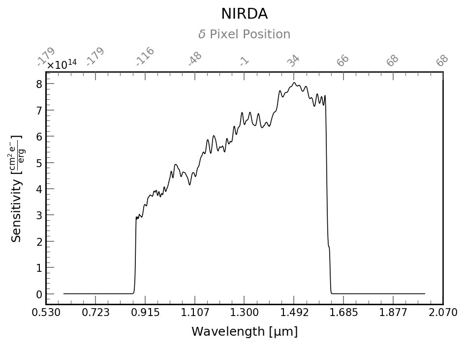

Documentation for NIRDetector
The NIRDetector class shows you what to expect from the Near IR side of Pandora. The key information on the detector is given below.

| NIRDA | |
|---|---|
| Detector Size | (2048, 2048) |
| Subarray Size | (400, 80) |
| Pixel Scale | 1.19 \(\mathrm{\frac{{}^{\prime\prime}}{pix}}\) |
| Pixel Size | 18.0 \(\mathrm{\frac{\mu m}{pix}}\) |
| Dark Noise | 1.0 \(\mathrm{\frac{e^{-}}{pix\,s}}\) |
| Wavelength Midpoint | 1.30 \(\mathrm{\mu m}\) |
| Pixel Read Time | 1.0e-05 \(\mathrm{\frac{s}{pix}}\) |
| Zeropoint | 3.126e-10\(\mathrm{\frac{erg}{A\,s\,cm^{2}}}\) |
| R @ 1.3\(\mu m\) | 65 |
API Documentation for pandorasat.NIRDetector
Bases: DetectorMixins
Holds information on the Pandora IR detector
bias
property
NIRDA detector bias
bias_uncertainty
property
Uncertainty in NIRDA detector bias. Every integration has a different bias.
bits_per_pixel
property
Number of bits per pixel
correlated_double_sampling_read_noise
property
This is the read noise obtained when differencing two images.
dark_rate
property
Dark signal rate, detector only, no thermal
gain
property
detector gain
midpoint
property
Mid point of the sensitivity function
naxis1
property
WCS's are COLUMN major, so naxis1 is the number of columns
naxis2
property
WCS's are COLUMN major, so naxis2 is the number of rows
non_linearity
property
NIRDA non linearity
pixel_read_time
property
Pixel read time
pixel_scale
property
Pixel scale of the detector
pixel_size
property
Size of a pixel
read_noise
property
Read noise
saturation_limit
property
NIRDA saturation limit. Bias contributes to saturation.
shape
property
Shape of the detector in pixels
stray_light_rate
property
Stray light rate
subarray_size
property
Size of standard subarray
thermal_background_rate
property
NIRDA thermal background rate
zodiacal_background_rate
property
Zodiacal light background rate
apply_gain(values)
Applies a single gain value
average_flux_density_to_mag(average_flux_density)
Convert average flux density to magnitude based on the zeropoint of the detector
estimate_zeropoint()
Use Vega SED to estimate the zeropoint of the detector
flux_to_mag(flux)
Convert flux to magnitude based on the zeropoint of the detector
frame_time(array_size=None)
Time to read out one frame of the subarray
get_wcs(ra, dec, theta=u.Quantity(0, unit='degree'))
Returns an astropy.wcs.WCS object
mag_to_average_flux_density(mag)
Convert magnitude to average flux density based on the zeropoint of the detector
mag_to_flux(mag)
Convert magnitude to flux based on the zeropoint of the detector
plot_sensitivity(ax=None)
Plot the sensitivity of the detector as a function of wavelength
qe(wavelength)
Calculate the quantum efficiency of the detector.
Parameters
wavelength : npt.NDArray
Wavelength in microns as astropy.unit
Returns
qe : npt.NDArray Array of the quantum efficiency of the detector
sensitivity(wavelength)
Calulate the sensitivity of the detector.
Parameters
wavelength : npt.NDArray
Wavelength in microns as astropy.unit
Returns
sensitivity : npt.NDArray Array of the sensitivity of the detector
throughput(wavelength)
Optical throughput at the specified wavelength(s)